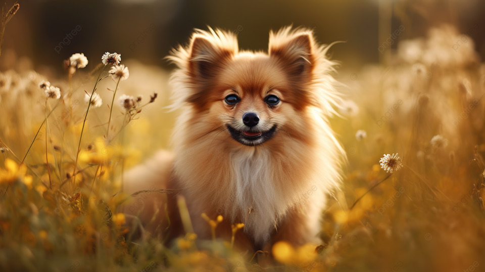

    <CENTER>
    
    </CENTER>
    <SCRIPT>
        var al = 0;
        function podmen() {
            var w = document.images[0].src;
            var ch = w.lastIndexOf("/");
            var path = w.substring(0, ch + 1);
            if (al == 0) {
                document.images[0].src = path + "dog1.jpg";
                al = 1;
            } else {
                document.images[0].src = path + "dog2.jpg";
                al = 0;
            }
            setTimeout(podmen, 600);
        }

        setTimeout(podmen, 600);
    </SCRIPT>
    </BODY>
